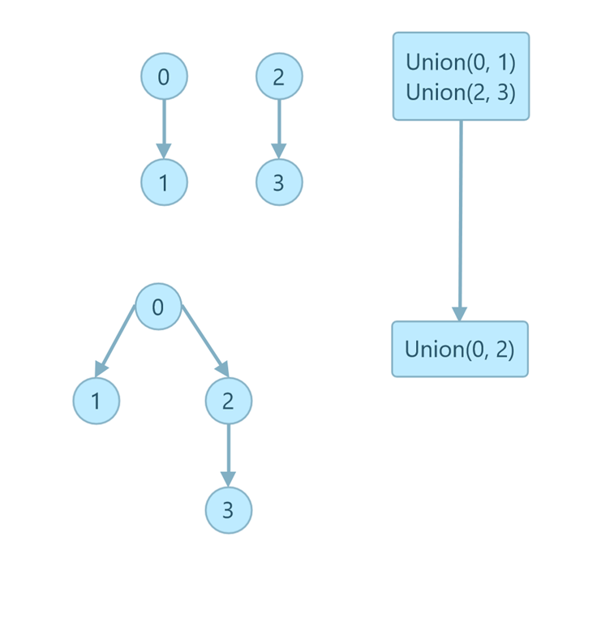

1.5.15
上次更新：2022-02-18
发现了题解错误/代码缺陷/排版问题？请点这里：如何：提交反馈 。
解答
首先证明在最坏情况下加权 quick-union 算法生成的树中的每一层结点数均为二项式系数。
最坏情况下，每次 union 操作都是合并相同大小的树，如下图所示：

设第 i 层的结点数为 ki，那么最坏情况下每次合并后的 ki’ = ki + ki-1 。
这符合二项式系数的构造特点（详情可以搜索杨辉三角），
第一个结论证明完毕。
接下来求平均深度，首先根据二项式的求和公式，一棵深度为 n 的树（根结点的深度为零）结点总数为：
k=0∑n(nk)=2n
每层结点数 × 该层深度后的和为：
k=0∑nk⋅(nk)=nk=1∑n(n−1k−1)=ns=0∑n−1(n−1s)=n2n−1
这里用到了这个公式化简：
(nk)=kn(n−1k−1)
相除可以求得平均深度：
Dˉ=∑k=0n(nk)∑k=0nk⋅(nk)=2nn2n−1=2n